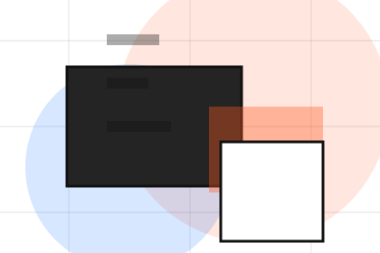
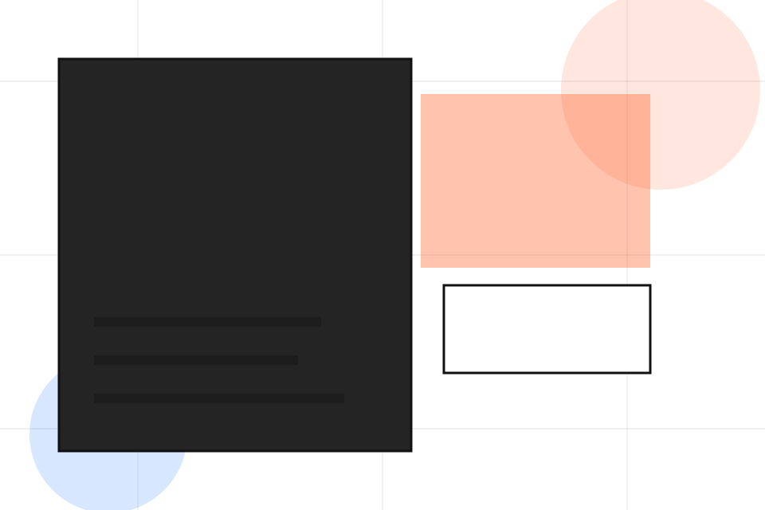
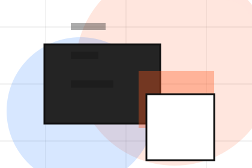
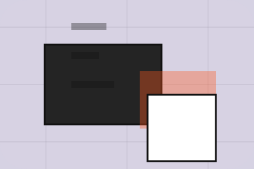

Before
The uncertainty, delay, or missed opportunity visitors bring into clarity.
Results / 01
Results opens as a clear consulting decision hub: what Vector offers, who it helps, why it matters, and which route to take first.
The first screen combines positioning, proof, primary action, and fast internal navigation, so people can act immediately or compare the rest of the results route with context.
Idea-led editorial hero
Select the closest route and Vector keeps the next step, proof, and follow-up expectation aligned with clarity, leverage and measurable progress.

Results / 02
Revenue shows what changes after the work: clearer decisions, visible progress, and proof points that connect the offer to real outcomes.
The layout connects before-and-after thinking with measured outcomes, making the result easy to scan without promising what the business cannot guarantee.
Explore ResultsThe uncertainty, delay, or missed opportunity visitors bring into revenue.
The clearer, safer, or more valuable state Vector is designed to support.
The visible cue that connects revenue to a believable decision, not a loose claim.
Results / 03
Efficiency shows what changes after the work: clearer decisions, visible progress, and proof points that connect the offer to real outcomes.
The layout connects before-and-after thinking with measured outcomes, making the result easy to scan without promising what the business cannot guarantee.
Explore ResultsVector structures efficiency around before, after, and a clear next route so visitors can compare the block quickly before they send a brief.
Send BriefResults / 05
Metrics shows what changes after the work: clearer decisions, visible progress, and proof points that connect the offer to real outcomes.
The layout connects before-and-after thinking with measured outcomes, making the result easy to scan without promising what the business cannot guarantee.
Explore ResultsThe uncertainty, delay, or missed opportunity visitors bring into metrics.
The clearer, safer, or more valuable state Vector is designed to support.

The visible cue that connects metrics to a believable decision, not a loose claim.
Results / 06
Reviews shows what changes after the work: clearer decisions, visible progress, and proof points that connect the offer to real outcomes.
The layout connects before-and-after thinking with measured outcomes, making the result easy to scan without promising what the business cannot guarantee.
Explore ResultsThe uncertainty, delay, or missed opportunity visitors bring into reviews.
The clearer, safer, or more valuable state Vector is designed to support.
The visible cue that connects reviews to a believable decision, not a loose claim.
Results / 07
Before shows what changes after the work: clearer decisions, visible progress, and proof points that connect the offer to real outcomes.
The layout connects before-and-after thinking with measured outcomes, making the result easy to scan without promising what the business cannot guarantee.
Explore ResultsThe uncertainty, delay, or missed opportunity visitors bring into before.
The clearer, safer, or more valuable state Vector is designed to support.
The visible cue that connects before to a believable decision, not a loose claim.
Results / 08
Lessons shows what changes after the work: clearer decisions, visible progress, and proof points that connect the offer to real outcomes.
The layout connects before-and-after thinking with measured outcomes, making the result easy to scan without promising what the business cannot guarantee.
Explore ResultsVector structures lessons around before, after, and a clear next route so visitors can compare the block quickly before they send a brief.
Send BriefResults / 09
Proof shows what changes after the work: clearer decisions, visible progress, and proof points that connect the offer to real outcomes.
The layout connects before-and-after thinking with measured outcomes, making the result easy to scan without promising what the business cannot guarantee.
Explore ResultsThe uncertainty, delay, or missed opportunity visitors bring into proof.
The clearer, safer, or more valuable state Vector is designed to support.
The visible cue that connects proof to a believable decision, not a loose claim.
Results / 10
Vector closes the results route with a clear action, a quick reminder of the value, and a low-friction way to send a brief.
Visitors who are ready can use the primary action. Visitors who are still comparing can scan the section links, proof, and support routes before they send a brief.
Send BriefThe final block keeps the choice simple: act now, compare one more proof route, or send enough detail for a focused response.
Send Briefclarity, leverage and measurable progress
A strategy studio site with large editorial type, idea-led modules, mosaic proof, and workshop conversion. Results ends with a direct path to send a brief, plus enough context for visitors who still need to compare.

Send BriefInformation is provided for planning and should be reviewed for the final client, location, and operating rules.